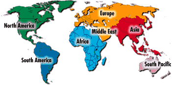

International International Non-US Lineages and Research |
|
 |
| South African Lineages | English Lineages | German Lineages |
|
|
1. Thomas Dowdy - of Lincolnshire (to New York) 2. William Dowdy - of Stoke Goldington, Buckinghamshire 3. John Dowdy - of Stoke Goldington, Buckinghamshire (to Australia) 4. Edward Dowdy - of Swanton Morley, Norfolk |
1. John Henry Daude - of Pfalz, Bayern Germany. 2 Daughters died 1808 Wythe Co. Virginia
|
|
Canadian Lineages |
Scottish Lineages |
Irish Lineages |
|
1. James
R. Dowdy - b abt 1851 family lived Kings Lynn Norfolk UK
and Nova Scotia Canada new!
|
|
1. William Dowdy - b 1808 Lex Ireland Family moved to South Australia |
|
Australian Lineages |
Caribbean Lineages |
|
| 1. William Dowdy - b 1808 Lex Ireland Family moved to South Australia |